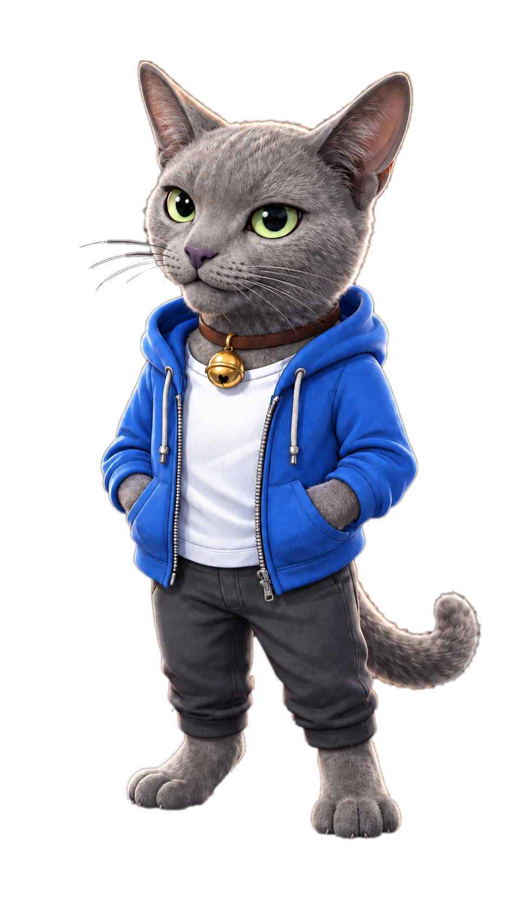

ONE HOUSE, TWO QUESTIONS
온톨로지
VS
토폴로지
이름
을 붙이면 온톨로지,
길
을 이으면 토폴로지.

우리 집으로
알려줄게옹
ONTOLOGY · 도감
이 집에
뭐가
있지?
우리 집
가족
물건
집사
푸름이
밥그릇
소파
푸름이는 '가족', 밥그릇은 '물건'
TOPOLOGY · 지도
어떻게
이어졌지?
창가
거실
현관
욕실
소파
밥그릇
소파 → 거실 → 밥그릇, 두 칸이면 도착
한눈에
온톨로지
토폴로지
핵심 질문
뭐가 있지?
어떻게 이어졌지?
비유
우리 집 도감
우리 집 지도
중요한 것
이름 · 특징 · 관계의 뜻
연결 · 경로 · 구조
결과물
개념 목록, 관계도
연결 지도, 네트워크 구조도
어디에 쓰나
지식 정리, AI 지식 표현,
데이터 표준화
네트워크 설계, 길 찾기,
회로 설계
도감
으로 뭐가 있는지 알고,
지도
로 어떻게 가는지 알면
둘을 함께 쓴 AI는
훨씬 똑똑해져요.